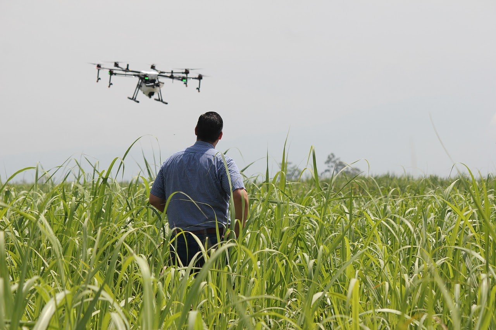
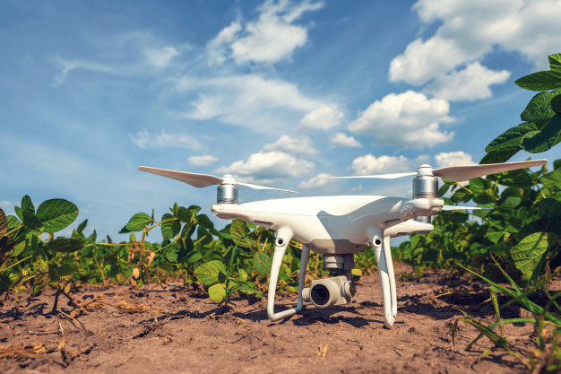

Aero Report
Com o avanço da tecnologia, os Veículos Aéreos Não Tripulados (VANTs) começaram a
ser integrados com diversos tipos de ferramentas. Aqui na AgroMap desenvolvemos
um software que é capaz de analisar as imagens capturadas pelos drones e reportar
para o agricultor qual área de seu cultivo que está sendo atacada por pragas ou sofrendo
com doenças.

Entenda o funcionamento: O drone tem tecnologia com pilotagem automática, que
tem o trajeto pré-definido pelo operador, e usa uma câmera multiespectral para mapear
determinado local e gerar imagens completas da região selecionada, tudo em alta resolução. Após
a captação e o processamento dos registros, os dados são analisados por um software com
inteligência artificial que indica com precisão onde está acontecendo a infestação de ervas
daninhas, por exemplo. Além disso, o sistema possibilita encontrar outros problemas, como falhas
nas plantações.

Como essa tecnologia permite uma análise rápida e precisa da situação da lavoura, o produtor tem
mais ferramentas para tomar decisões e agir antes que aconteçam problemas maiores, evitando
ações tardias que comumente geram muitos danos e elevam consideravelmente os custos. Além disso,
a detecção precoce desses maus possibilita que o agricultor substitua a utilização de pesticidas
pelo uso de predadores naturais no controle de pragas, gerando assim um alimento seguro para
consumo.
Para alavancar ainda mais a qualidade desse serviço, nossa equipe está buscando investidores
interessados em nos ajudar na construção de uma bateria inovadora para os VANTs, que
possibilitaria
um voo de até 24hrs, dispensando qualquer pausa para recarga. Quer fazer parte do time
de sócios? Entre em contato com a gente.